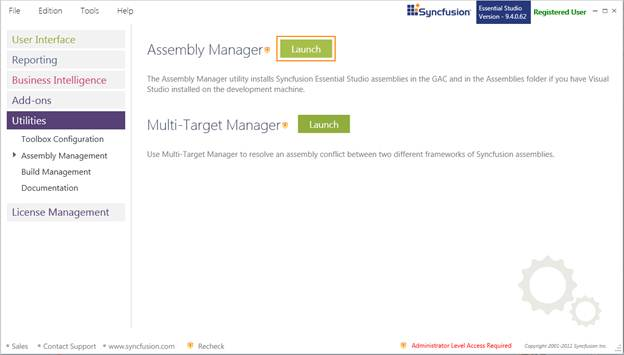
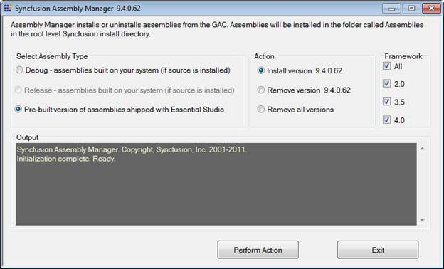
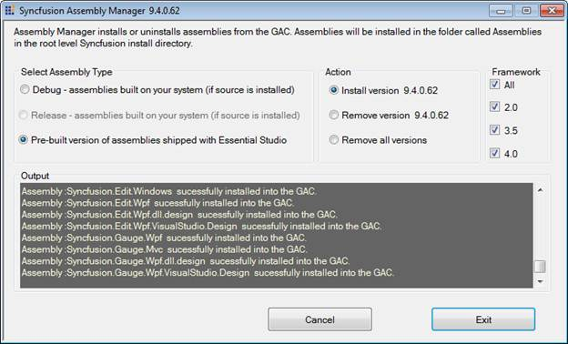
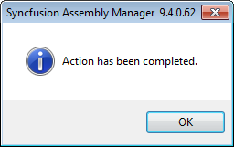
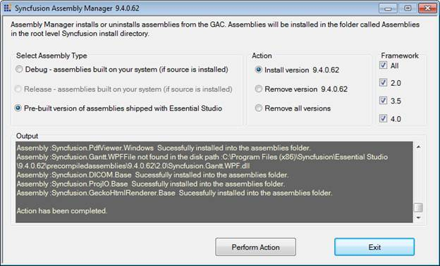

Assembly Manager is used to install and uninstall the assemblies to and from the GAC and Public Assemblies folder under the installed location. It is used to install and uninstall the assemblies into the GAC.
Launching the Assembly Manager
The following are the steps to run the Assembly Manager:
1. Open Syncfusion Dashboard.
2. Click Utilities > Assembly Management.
3. Click Launch button for Assembly Manager.

Figure 118: Lunch Assembly Manager
4. Syncfusion Assembly Manager x.x.x.x window opens.
 Note: You can also open the Assembly Manager from
the following location:
Note: You can also open the Assembly Manager from
the following location:
{Installed location}\Syncfusion\Essential Studio\x.x.x.x\Utilities\Assembly Manager\AssemblyManagerWindows.exe

Figure 119: Syncfusion Essential Studio Assembly Manager
5. Select the required option for Select Assembly Type sections.
Select Assembly Type
· Pre-built Assemblies
These are the assemblies shipped with Essential Studio. Selecting this mode will trigger the Assembly Manager to install the Pre-built Assemblies.
· Debug and Release Assemblies
Debug or Release mode, will trigger the Assembly Manager to install custom versions built from the source code using Build Manager. These assemblies can be used only when the source code for at least one of the Essential Studio products has been installed. This will trigger the Assembly Manager to install custom versions built from source code, installed on your machine (Applies only to versions of the product that comes with the source code).
Note:
The Build Manager application has to be
run to build debug or release versions of the assemblies before the Assembly
Manager can install the custom built assemblies.
6. Select the required option for Action sections.
Action
The Assembly Manager can perform install or uninstall assemblies. To perform this action select the Install version x.x.x.x or remove version x.x.x.x radio button. To remove all select the Remove All Versions radio button.
Note: Remove All Versions must be used with
caution in scenarios when one has applications depending on certain versions of
the Syncfusion assemblies installed in the GAC. They may cease to
function.
7. Select the required option for Framework sections.
Framework
The Framework group box comprises the checkboxes for the .NET framework versions based on the Visual Studio SDK installed in the machine. The following checkboxes are available:
· 4.0 - Selecting 4.0 ensures installation of 4.0 assemblies into the GAC and assemblies folder. In cases where only Visual Studio 2010 SDK is installed, the 4.0 assemblies have to be deployed.
· 3.5 - Selecting 3.5 ensures installation of 3.5 assemblies into the GAC and assemblies folder. In cases where only Visual Studio 2008 SDK is installed, the 3.5, 2.0 assemblies can be deployed.
· 2.0 - Selecting 2.0 ensures installation of 2.0 assemblies into the GAC and assemblies folder. In cases where only Visual Studio 2005 SDK is installed, the 2.0 assemblies have to be deployed.
· All – Selecting All ensures installation of all frameworks (frameworks installed in the machine) assemblies into the GAC and assemblies folder.
Note:
By default 2.0 is enabled in a system where Visual Studio 2008 SDK is
installed.
8. Click Perform Action. It will start processing.

Figure 120: Log in Output Field
9. Once the action is completed, a confirmation popup will open.

Figure 121: Syncfusion Assembly Manager Dialog Box
10. Click OK.

Figure 122: Action Completed
Important Note
In earlier versions, the Assembly Manager also served as a build manager to build custom versions of the Syncfusion Assemblies. Now, this function has been moved to a separate Build Manager utility. Installation of assemblies to the Visual Studio.NET toolbox is now handled by a separate utility called the ToolboxInstaller. The new Assembly Manager just handles installation of assemblies to the GAC and the assemblies folder (The Assemblies folder is applicable only if Visual Studio.NET is installed).
In previous versions, the Assembly Manager allowed switching to any version of the Syncfusion assemblies installed on the system. This causes compatibility issues and also restricts the overall structure of the utility. From the current version, to switch to another version, you will have to run the Assembly Manager of the respective version. It would be preferable to have the Assembly Manager do a Remove All operation before it installs the latest assemblies.
The console version of the Assembly Manager will run at the end of the install process to add the default pre-built version of the Syncfusion assemblies to the Global Assembly Cache (GAC) and the Visual Studio .NET Public Assemblies folders (if applicable). The need to run the Assembly manager arises only when changes have been made to the GAC or when custom versions have been built for controls for debugging purposes.
Note: The version number in the tags has to be
changed to the version you are linking to.
Syncfusion Assemblies
The Syncfusion assemblies are installed in the following two locations:
· Assemblies folder
· Global Assembly Cache (GAC)
The Assemblies folder
11. In the Assemblies folder, the assemblies will be available in the following installation path:
[System Drive]:\Program Files\Syncfusion\Essential Studio\x.x.x.x\Assemblies
Note:
· The sub-folder 3.5 is used with .NET 3.5 and the sub-folder 2.0 is used with .NET 2.0. In most cases, [System Drive]:\ is C:\.
· In 2.0 and 3.5 GAC, the assemblies will be available in the installation path [System Drive]:\WINDOWS\assembly.
· In 4.0 GAC, the assemblies will be available in the installation path [System Drive]:\WINDOWS\ Microsoft.NET\assembly\GAC_MSIL.
Essential Studio ships the pre-built 2.0, 3.5 and 4.0 .NET Framework versions of the Syncfusion assemblies. These assemblies are located in the PreCompiledAssemblies folder.
[System Drive]:\Program Files\Syncfusion\Essential Studio\x.x.x.x\PreCompiledAssemblies\x.x.x.x\2.0
If you work with multiple target environments, you will see that each appropriate version is installed in the GAC for true side-by-side use.
Working with Syncfusion assemblies that have been built and tested with specific .NET Framework versions greatly increases the overall reliability. It also allows Syncfusion controls to take advantage of features that may be available in specific environments. For instance .NET 2.0 variants of the control offer features specific to the .NET 2.0 environment.